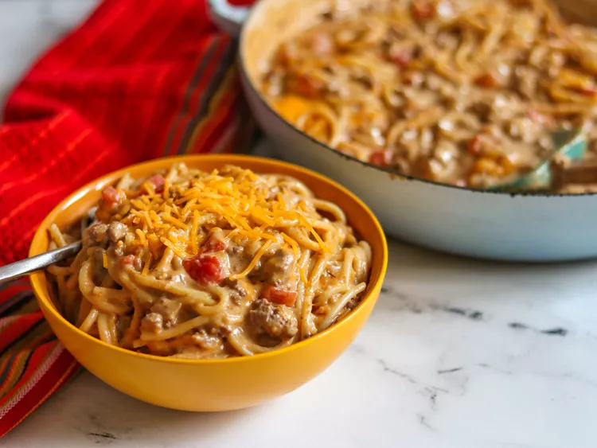

Taco Pasta

Description
This is an easy taco pasta dish to make with ground beef, your favorite taco seasoning, tomatoes, pasta, and two types of cheese for a quick and delicious dinner that hits the spot every time!
Ingredients
- 6 ounces spaghetti or other pasta
- 1 pound ground beef
- ½ cup diced onion
- 1 (10.5 ounce) can condensed cream of mushroom soup
- 1 (10 ounce) can diced tomatoes and green chiles (such as RO*TEL®)
- ⅔ cup water
- 1 ounce taco seasoning
- 1 (8 ounce) package processed cheese (such as Velveeta®), cubed
- 1 cup shredded sharp Cheddar cheese
Steps
- Bring a large pot of lightly salted water to a boil. Cook pasta in the boiling water, stirring occasionally, until tender yet firm to the bite, about 10 to 12 minutes.
- Meanwhile, heat a large skillet over medium heat and cook ground beef and onions until meat is browned and onions are soft and translucent, about 5 minutes. Stir in mushroom soup, tomatoes, water, and taco seasoning. Cook until well combined. Add Velveeta and stir until melted, about 5 minutes.
- Drain pasta and add to skillet. Top with Cheddar cheese, cover, and let stand until cheese has melted.